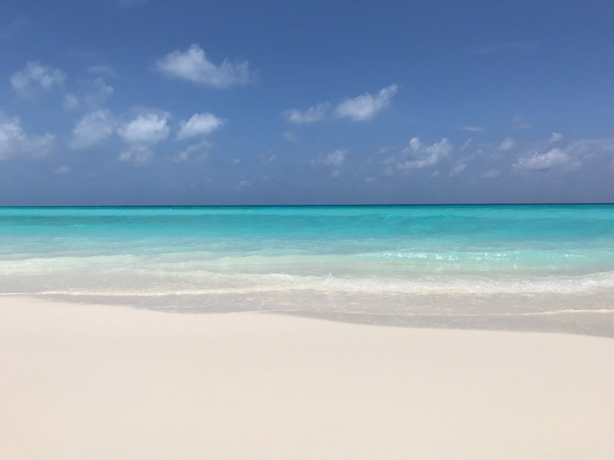
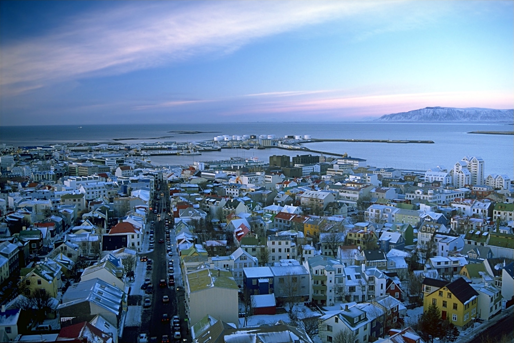
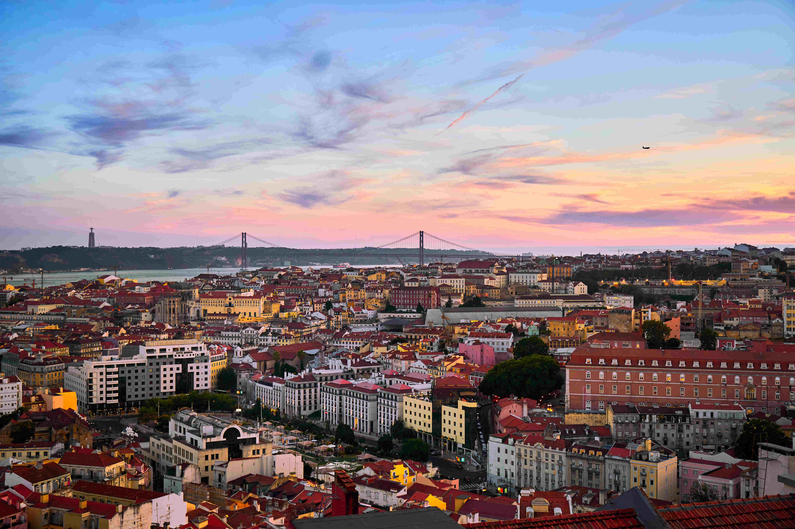

Lissabon
Pittoreske Gassen, bunt gekachelte Häuser und der Blick auf den Atlantik machen Lissabon zu einem traumhaften Städteziel
Fernweh beginnt hier
Entdecke inspirierende Orte für deine nächste Reise
Dein nächstes Abenteuer
Ob sonnige Küsten, historische Städte oder beeindruckende Landschaften: Reisen verbinden uns mit besonderen Umgebungen auf der ganzen Welt
Auf dieser Seite findest du ausgewählte Inspirationen für die perfekte Urlaubsplanung
Ziele ansehen
Ausgewählte Ideen
Pittoreske Gassen, bunt gekachelte Häuser und der Blick auf den Atlantik machen Lissabon zu einem traumhaften Städteziel
In Island treffen heiße Quellen, wilde Küsten und faszinierende Natur auf nordische Ruhe und Wildnis
Moderne Architektur, kulinarische Vielfalt und tropische Gärten erwarten dich in dieser quirligen Metropole
Reisemomente


Du hast ein Lieblingsziel oder möchtest eine Reiseidee teilen? Schreib uns eine Nachricht an reisen@jo.holiday.